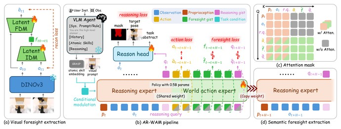
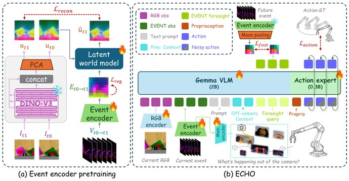
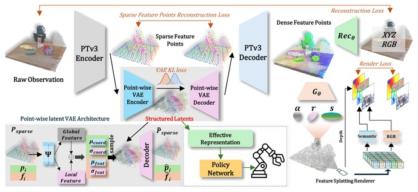
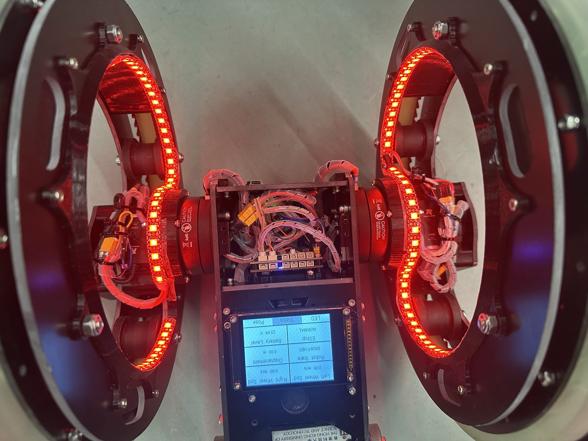
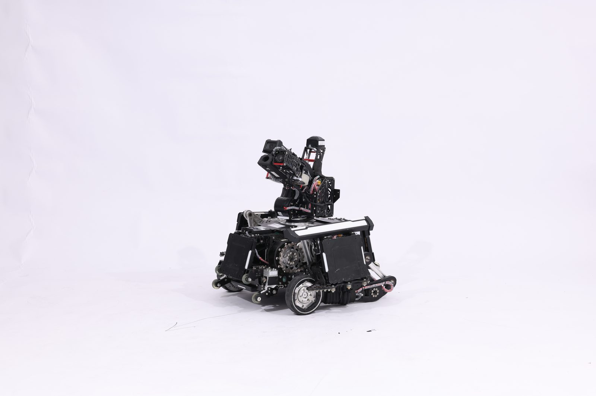
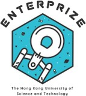

2026

About Me
I am a final-year undergraduate student at The Hong Kong University of Science and Technology, studying Computer Engineering with a minor in Robotics. My research is in embodied AI — building models that let robots understand the world well enough to act in it.
I am currently a Research Intern at Sangfor Technologies, supervised by Prof. Xiaobo Wang. I have spent three years with HKUST RoboMaster Team ENTERPRIZE, where I now serve as Senior Advisor.
I am looking for PhD opportunities. If you are interested in my experience, please feel free to reach out.
Our preprint AR-WAM: A Visual-Conditioned Agent-Ready World Action Model for Robotic Manipulation is now available on arXiv.
Our paper MVISTA-4D: View-Consistent 4D World Model with Test-Time Action Inference for Robotic Manipulation was accepted to ICML 2026.
Our paper Learning Structural Latent Points for Efficient Visual Representations in Robotic Manipulation was accepted to ICRA 2026.
Won the championship of the RoboMaster 2025 University League with HKUST RoboMaster Team ENTERPRIZE.
* Equal contribution.




ELEC-3300 Course Project
A wheel-legged robot that balances and drives on two hub-motor wheel-legs — custom control electronics, LED rings, and an on-board status display.

HKUST RoboMaster Team ENTERPRIZE · Team Leader
The wheel-legged infantry robot I led the development of throughout the 2025 season — top infantry robot of the national championship, 1st in average damage per match (1375.1 pts).
Sangfor Technologies
Working on vision-language-action models and world action models for robotic manipulation.

HKUST RoboMaster Team ENTERPRIZE
Previously Team Leader and Embedded Engineer.
Shenzhen BrightMaster Robotics Co., Ltd.
HKSAR Government Scholarship Fund
Zhejiang Regional Competition, 3V3 · Results ↗